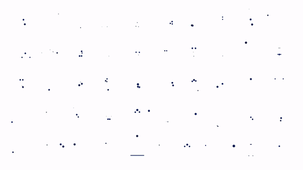
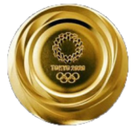
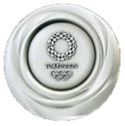
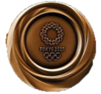

As olimpíadas de 2020 serão realizadas em Tóquio, no Japão, de 24 de julho a 9 de agosto de 2020. Em sua 32ª edição, os Jogos Olímpicos de Verão terão 33 modalidades esportivas, com a expectativa de participação de mais de 11 mil atletas, os quais representarão mais de 204 países. Essa é a segunda vez que Tóquio recebe os Jogos Olímpicos Modernos, a primeira vez foi em 1964, o que tornou a capital japonesa a ser a primeira cidade asiática a sediar duas vezes as Olimpíadas. A expectativa do Comitê Organizador Internacional (COI) é de que cerca de 4,5 milhões de pessoas estejam presentes nas competições, que serão realizadas na Baía de Tóquio (capital) e região metropolitana (com exceção de Sapporo, a 832 km de Tóquio), em 43 locais definidos para os eventos.


Tóquio foi anunciada oficialmente como sede das Olimpíadas de 2020 na cerimônia de encerramento dos Jogos Olímpicos do Rio de Janeiro, em 2016, data em que começou a contagem regressiva para a 32ª edição da competição. A estimativa orçamentária oficial do Comitê Olímpico de Tóquio foi de 12,6 bilhões de dólares para a realização dos jogos. Além desse valor, o governo anunciou o investimento de 7,5 bilhões de dólares. A estrutura dos Jogos Olímpicos conta com 43 locais, sendo 25 já existentes e que passam por adaptação para as competições, 10 temporários e 8 novas construções. Algumas modalidades serão disputadas em lugares que foram construídos para as Olimpíadas de 1964 e permanecem em atividade, como é o caso do Estádio Olímpico, do Nippon Budokan e do Ginásio Nacional de Yoyog. O Estádio Nacional de Tóquio, ou Estádio Olímpico, passa por uma grande reforma para receber a abertura e o encerramento dos Jogos Olímpicos, além das modalidades de atletismo e partidas de futebol. O novo estádio terá capacidade para 68 mil pessoas, ao custo de cerca de 1,5 bilhão de dólares.
Mascotes


O mascote dos Jogos Olímpicos foi chamado de Miraitowa, nome formado pelas palavras japonesas Mirai (futuro) e Towa (eternidade), que representa o desejo de um futuro cheio de esperança nos corações de todas as pessoas do mundo.


A mascote das Paraolimpíadas de Tóquio é Someity, criatura inspirada nas tradicionais flores de cerejeira do Japão e que tem um incrível poder mental e força física, simbolizando a superação de obstáculos dos paratletas. Seu nome é baseado na junção de Someiyoshino (espécie de flor de cerejeira) com o termo “so might” (é possível, em adaptação ao português).
Confira todas as modalidades das Olimpíadas de 2020:
- Atletismo
- Badminton
- Basquete
- Basquetebol
- Basquete3x3
- Beisebol/Softball
- Basebol
- Softbol
- Boxe
- Canoagem
- Slalom
- Velocidade
- Caratê
- Ciclismo
- Estrada
- Pista
- BMX
- Mountain bike
- Freestyle
- Esgrima
- Escalada
- Futebol
- Ginástica
- Artística
- Rítmica
- Trampolim
- Golfe
- Halterofilismo
- Handebol
- Hipismo
- Hóquei sobre a grama
- Judô
- Lutas
- Livre
- Greco-romana
- Aquáticos
- Natação Artística
- Natação
- Saltos ornamentais
- Pentatlo moderno
- Polo aquático
- Remo
- Rugby sevens
- Skate
- Street
- Park
- Surfe
- Taekwondo
- Tênis
- Tênis de mesa
- Tiro
- Tiro com arco
- Triatlo
- Vela
- Vôlei
- Vôlei quadra
- Vôlei de praia
A premiação das Olimpíadas é constituída de medalhas destinadas aos três primeiros lugares em cada competição ou torneio, sendo o pódio formado pelos medalhistas de ouro  , prata  e bronze  .
O ranking do quadro de medalhas é definido pela quantidade de medalhas de ouro, seguidas pelas de prata e, por último, de bronze. Por exemplo, um país com 5 medalhas de prata e 8 de bronze classifica-se atrás de um país com 2 medalhas de ouro. Estados Unidos e China devem disputar o primeiro lugar no ranking geral.
Quanto custa ir para as Olimpíadas de Tóquio?
Ingressos
Cada país tem uma empresa oficial responsável pela venda autorizada de ingressos das Olimpíadas de 2020. No Brasil, as vendas estão previstas para a segunda quinzena de julho. Os valores informados pelo Comitê Organizador de Tóquio são referentes aos ingressos destinados aos residentes no Japão, para os quais os tíquetes já estão sendo vendidos. Apesar da diferença no preço final, é possível programar-se pelos preços informados pela organização:
- Cerimônia de Abertura e Encerramento: variam de Y 12.000 ienes (R$ 420) a Y 300.000 ienes (R$ 10.500)
- Competições: variam de Y 2.500 ienes (R$ 87) a Y 130.000 (R$ 4.550), sendo mais da metade dos ingressos de Y 8.000 ienes (R$ 280)
Passagens
Fatores como local de partida, companhia aérea e até a data da compra da passagem influenciam no valor dos bilhetes aéreos e, conforme as Olimpíadas aproximam-se, a tendência é que os preços fiquem mais altos. Além da pesquisa pelas companhias aéreas, ferramentas como o Google Flyghts são úteis para a comparação de valores. Outro fator importante é saber se será necessário pegar ônibus ou outro transporte para assistir aos jogos, já que algumas competições serão realizadas fora de Tóquio, acrescentando o valor da locomoção até o destino escolhido.
Hospedagem
Outro gasto para quem vai para as Olimpíadas é a hospedagem. Pessoas que vão em grupos podem economizar se optarem por apartamentos, os quais variam de R$ 290 a R$ 800 por dia (sendo o valor mais baixo para duas pessoas e o mais alto para até oito). Hotéis possuem um custo mais alto se comparados aos hostels e apartamentos, mas são uma boa opção para quem prefere contar com serviço de quarto e alguns diferenciais.
Transporte
O transporte público de Tóquio funciona muito bem, por isso é uma boa opção para o turista. O Ticket All-Day Tokyo Metro, que permite usar o metrô durante todo o dia, custa cerca de R$ 21 e, caso seja Tokyo Metro + Toei Subway, que inclui ônibus, o valor sobe para R$ 34. Já o bilhete individual sai por R$ 9,50 para andar até 27 km, enquanto de 28 km a 40 km o preço sobe para e R$ 10,60.
Alimentação
Os gastos com alimentação variam muito de pessoa para pessoa, mas é possível fazer as três principais refeições com os seguintes valores:
- Café da manhã: R$ 17 a R$ 30
- Almoço: R$ 27 a R$ 73
- Jantar: R$ 35 a R$ 105
Tecnologias que serão usadas em Tóquio 2020 :
Veículos autônomos

Sistemas de reconhecimento facial

Tecnologia de tradução de idiomas

Robôs / A.I.

Fontes de energia mais limpas

Entretenimento 3D